Plant Basics 1
There are two questions in this section (PB1 A-B).
What is a plant made of?
You’ve probably noticed that plants grow from tiny seeds into large individuals. Below is an example of a sunflower seed growing into a large sunflower plant (about six feet tall).
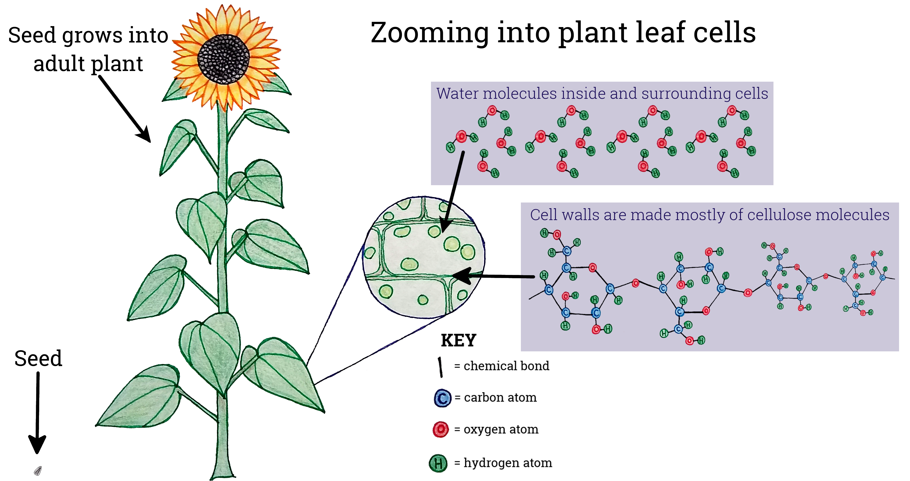Most plants have leaves, a stem/trunk, and roots, and these body parts are made up of tissues. If we zoom into the tissues in the sunflower’s leaves, we can observe that the plant cells are surrounded by water (we will return to this later). Plant cell walls are made up mostly of a molecule called cellulose. Different kinds of molecules have different masses and different properties. For example, molecules of cellulose together help give plants structure. You are probably more familiar with cellulose than you think--cotton is almost entirely made up of cellulose. Notice the structure of the cellulose molecule, and compare this with the structure of a glucose molecule (a sugar).
A cellulose molecule and a glucose are shown in more detail in the figure below.
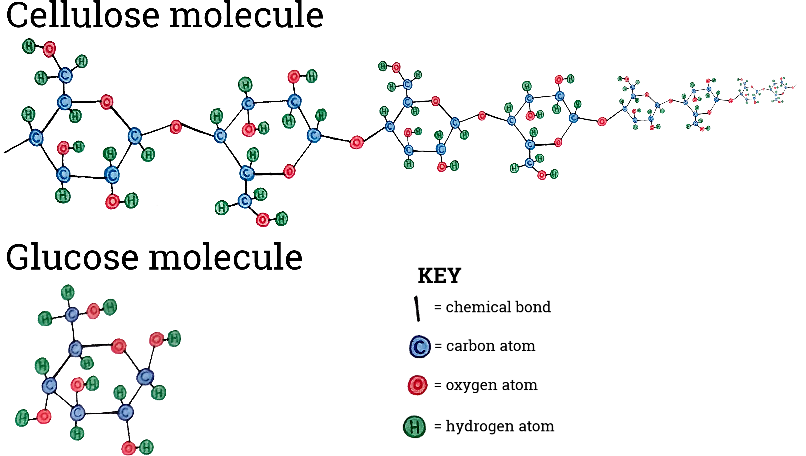If you are having trouble submitting your responses, make sure: 1) your email is filled in on the 'Introduction' tab, and 2) you have unchecked 'None selected.'
When you press the submit button, your responses will be recorded and you will no longer be able to change your answer.
Both cellulose and glucose are made up entirely of carbon, oxygen, and hydrogen atoms. Cellulose is a much larger molecule than glucose, and it includes more atoms and more chemical bonds. To put it simply, cellulose is a very large molecule made up of many smaller glucose molecules (hundreds) joined together in a chain.
Why should we think about a plant’s wet mass and dry mass separately?
Water is found within all of a plant's tissues (inside and outside of many of the plant's cells). However, scientists do not consider the water to be the matter that makes up the plant's tissues (like cellulose). In other words, water is not 'counted' as part of the plant itself.
Imagine a small sunflower plant that you want to know the mass of. You dig up the plant and place it on a scale--it weighs 10 grams. However, almost 90% of that mass is 'water weight,' which is referred to as the plant's wet mass. Next, you dry out the plant until all of the water has evaporated (scientists use drying ovens to do this). You weigh the plant again, and it weighs 1 g. The mass after the water has been removed is referred to as the plant’s dry mass.
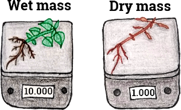Scientists who study plants are interested in dry mass. This is because (1) water surrounds a plant’s tissues but it isn’t a part of the plant’s tissues, and (2) wet mass can change from day to day (plant wet mass will be significantly different on a dry day versus after a rain).
What atoms make up a plant’s dry mass?
Above, we discussed how cellulose is one of the most common molecules in plants, and cellulose contains carbon, oxygen, and hydrogen atoms. Of course, plant tissues are made up of many other types of molecules too; these include starch, chlorophyll, DNA, sucrose, and fatty acids, among many others. The figure below will show the concentration of elements (e.g., hydrogen, oxygen) in all parts of a plant’s body. You can measure this by analyzing ground-up dry plant tissue using a tool called a gas chromatograph.
![Plot object]()
-
Answer explanation:
Most of the dry mass in a plant comes from carbon and oxygen atoms. These atoms are abundant in cellulose molecules. Even though hydrogen atoms are common in plants, hydrogen atoms have a very small mass. We will talk about this more in the next tab.
The figure above shows the concentration of each element in a plant’s body. The concentration of a particular element is the MASS, not the NUMBER, of its atoms in 1 kg of plant dry mass. Carbon atoms have much more mass than hydrogen atoms, so if a plant has the same NUMBER of each, then the carbon atoms will have a higher CONCENTRATION than the hydrogen atoms. In reality, plants have MORE hydrogen atoms than oxygen atoms (not fewer as indicated in the question), but because of the low mass of each hydrogen atom, the concentration of these atoms is very low.
Plants do contain potassium, phosphorus, magnesium, and calcium atoms (even though these atoms are not present in cellulose molecules). In plants, phosphorus can be found in DNA, protein, and other molecules; magnesium is a part of chlorophyll molecules; and calcium is a part of membrane molecules in cell walls; and potassium atoms are dissolved in the liquid parts of plant cells.
To reiterate, cellulose is one of the most common molecules making up plant cells and tissues. Cellulose is made up entirely of carbon, oxygen, and hydrogen atoms, so it is not surprising that these atoms make up a lot of the dry mass of plants.
Is cellulose the only substance making up a plant’s dry mass?
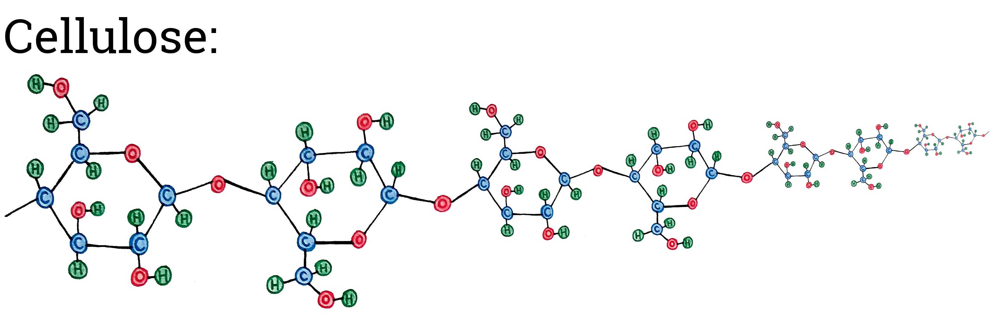In this assignment, we have been focusing on cellulose both because it is extremely abundant and because it is a molecule made up of many glucose molecules. Although plants have a lot of cellulose, they also contain many other kinds of molecules. You are probably familiar with some of these molecules.
Glucose and cellulose are both carbohydrate molecules. Plants also contain other kinds of carbohydrate molecules , including starch and fructose. Starch molecules are common carbohydrates in root tissues. Starch, like cellulose, is made up of glucose molecules. Starch is an important source of matter and energy for plants, meaning that plants can use starch as an input for tissue building or cellular respiration. Potatoes, for example, contain a lot of starch molecules (potatoes are underground parts of a potato plant’s stem, see the figure below). Fructose molecules are sugars that are common in fruit tissues. Strawberries contain a lot of fructose molecules (strawberries are the fruits from strawberry plants, see the figure below).
Plant tissues also include many different kinds of protein molecules , which serve various functions in plants. Proteins are an important source of matter for plants; they are used to add structure, to allow movement (e.g., during mitosis), to help chemical reactions occur (enzymes), or to perform other functions (e.g., ion channel proteins). As an example, chickpeas have a lot of protein molecules (chickpeas are the seeds of chickpea plants, see the figure below). Proteins can be used as a source of energy in plants (i.e., they can be used as inputs to certain stages of cellular respiration), but it is not very common.
Plant tissues also contain lipid molecules , which are important components of cell membranes and sources of matter and energy. Oil molecules (a kind of lipid) are very abundant in seeds. When seeds start growing, they require (1) a source of matter (carbon) to make body structures, and (2) a source of energy for cellular respiration. For example, the walnuts that we eat contain between 60-70% oils (walnuts are the seeds of walnut trees, see the figure below).
It is important to note that there can be many different molecules that can be inputs for cellular respiration (and thus, used as a source of energy). Above, we mentioned that starch (a carbohydrate), oils (lipid), and to a lesser extent proteins, are molecules that can be used as sources of energy. In fact, plants often use sucrose instead of glucose as the initial input for cellular respiration.
Plants also contain minerals , but minerals are not a source of matter and energy for plants. A few examples of minerals that can be found in plants are described to illustrate their diversity. (1) Iron is a part of molecules (hemes) that are associated with proteins used in cellular respiration and photosynthesis. (2) Magnesium is a part of green pigment molecules (chlorophyll) that absorb sunlight in photosynthesis. (3) Calcium and potassium are charged atoms (ions) that are dissolved in water in plant cells and used as messenger ions or to establish gradients for metabolic processes.

-
Answer explanation:
Walnuts have a higher percentage of lipids than the other food items listed here. Specifically, walnuts have a lot of lineoleic acid (a kind of oil).
The kinds of carbohydrates shown here are fructose (a small molecule), starch (a large molecule), and other (including many types of carbohydrate molecules: glucose, sucrose, cellulose, etc.). Potatoes and strawberries have a higher percentage of carbohydrates than the other food items.
Chickpeas and walnuts have higher percentages of proteins than the other foods. Both chickpeas and walnuts are plant seeds, and seeds need a source of protein to carry out early growth and development.
Minerals are not extremely abundant in plants relative to carbohydrates, proteins, and lipids. None of the food items here is mostly made up of minerals.
Last, note that each of bars in the figure represents the nutrient percentages for a PART of a plant. Were we to look at an entire strawberry plant, for example, the nutrient breakdown would be different.
End of Plant Basics 1, please move on to Plant Basics 2 using the tabs at the top of the page.
Plant Basics 2
There are four questions in this section (PB2 A-D).
Please complete Plant Basics 1 before beginning this section.
Where does plant mass come from?
In the previous tab, we discussed some of the molecules and atoms that make up plants. Now, we will determine where the matter that makes up plants comes from. Before really getting into this question, we have to review some chemistry basics.
Do all atoms have the same mass?
Even though atoms are incredibly small, they have mass. Different kinds of atoms (called elements) have different masses. The following figure shows the masses of three kinds of atoms that are common in plants (carbon, oxygen, and hydrogen). Even though hydrogen is common in plant tissues, it does not make up very much of the mass of plants because it weighs so little.
-
Answer explanation:
This figure shows the relative masses of hydrogen, carbon, and oxygen atoms. However, this figure does not give us any information specific to plants. Rather, it shows the masses of any hydrogen, carbon, or oxygen atom, regardless of where the atom is located. Oxygen atoms weigh more than carbon atoms, and carbon atoms weigh more than hydrogen atoms.
Atoms can bond together to form molecules. Different molecules have different masses and may also have different properties. As one example, oxygen gas is a molecule in which two oxygen atoms are bonded together. Air is made up of about 20% oxygen gas. Even though it is a gas and you can’t see it, oxygen gas has mass (and by extension, air has mass).
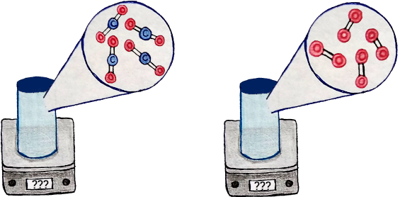-
Answer explanation:
The canister with carbon dioxide gas weighs more than the canister with the same number of molecules of oxygen gas because the carbon dioxide molecule has a larger mass than the oxygen gas molecule. Oxygen gas is made up of two oxygen atoms and carbon dioxide is made up of two oxygen atoms, plus a carbon atom. The image below shows a simplified visual representation of the relative masses of these molecules.
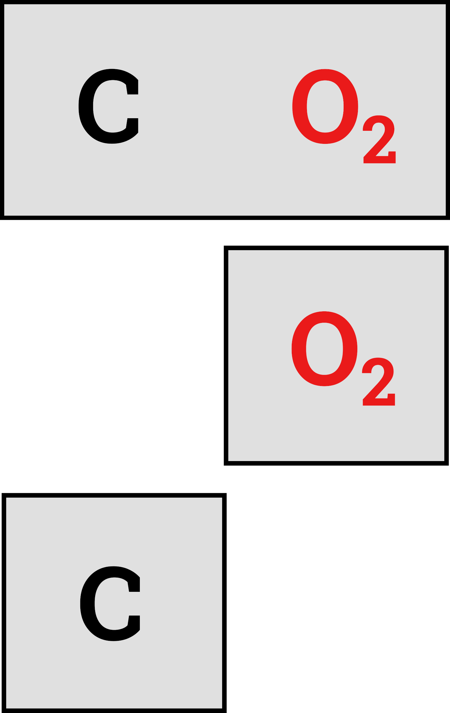Just because we cannot see a molecule with our own eyes, doesn’t mean that it lacks mass. In the graphs below, notice how the masses of some of the atoms and molecules we have discussed so far differ. As shown in the graph, a molecule of carbon dioxide (containing one carbon atom and two oxygen atoms) weighs more than a molecule of oxygen gas (containing two oxygen atoms). Also notice that a molecule of carbon dioxide gas weighs more than a molecule of water. Glucose, a sugar molecule, weighs much more than any of the other atoms or molecules in the figure.
-
Answer explanation:
The atoms and molecules in the figure are ordered from smallest to largest mass from left to right: hydrogen atom, carbon atom, oxygen atom, water molecule, carbon dioxide molecule, glucose molecule
Notice that cellulose, which is a molecule made up of a long chain of glucose molecules, is not shown in this figure. Click the button below to see how the mass of each of these molecules compares to the mass of cellulose.
In this figure, the atoms and molecules we have been discussing are shown next to the mass of cellulose. The mass of cellulose is so large that you can’t even see the masses of the other molecules.
How do plants make cellulose?
Photosynthesis
Plants are organisms that photosynthesize. In photosynthesis, many small, lower-energy molecules (carbon dioxide and water) are used to make one large, higher-energy molecule (glucose) and leftover molecules (oxygen gas). Sunlight provides the energy to do the work (breaking small molecules and forming large molecules).
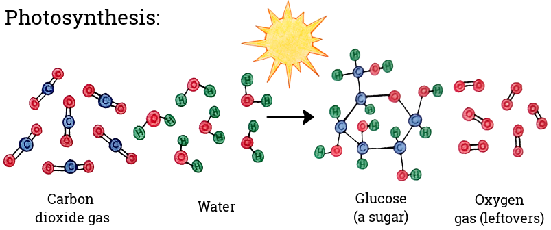The glucose molecule that a plant produces during photosynthesis can be added to the plant's tissues OR it can be used in metabolism (i.e., cellular respiration). The same glucose molecule CANNOT do both. Which of these paths (tissue building vs. metabolism) a particular glucose molecule will follow depends on the environment and the plant’s biological demands. The figure below shows a visual depiction of the two paths a glucose molecule produced by photosynthesis could take.
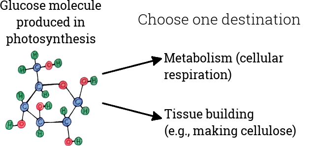How do plants use glucose to do work?
Cellular respiration
Like all living things, plants undergo chemical processes (i.e, metabolic processes) to stay alive. You can think of metabolism as the “fees” that the plant pays to keep on living. One important metabolic process is cellular respiration. Cellular respiration is a metabolic process that allows energy to become available to the plant for work (growth, maintenance, etc.). Some of the glucose that plants produce in photosynthesis will be inputs in cellular respiration.
In cellular respiration, a large, higher-energy molecule (glucose) is used as a source of matter and energy to do work in the plant's body. During cellular respiration, a glucose molecule and oxygen gas molecules are rearranged into many small, lower-energy molecules (carbon dioxide and water). These small, lower-energy molecules do not remain within the plant, but rather leave the plant's body as an output of cellular respiration. However, while ALL of the MATTER (and thus mass) of the glucose molecule leaves the body as gases, most of the ENERGY of the glucose molecule stays inside the body and is stored in a molecule called ATP. The energy stored in ATP is now readily available to the plant, and ATP can be thought of as the “batteries” that power metabolic processes in the plant’s body. Therefore, cellular respiration is essential for conducting metabolic activities in organisms. The image below shows a visual representation of cellular respiration. Keep in mind that ALL of the atoms shown as the outputs of the cellular respiration reaction (on the right) leave the plant’s body as gases.
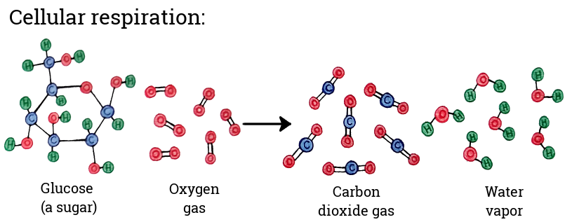-
Answer explanation:
Matter cannot be destroyed, so the number of atoms in the inputs of a chemical reaction (like photosynthesis or cellular respiration) will be the same as the number of atoms in the outputs.
Plants make glucose during photosynthesis, which they use as a source of matter and energy (i.e., food). In cellular respiration, organisms use the matter and energy contained in food and transform it into matter and energy that can be used to do work in their bodies. The types of molecules in the inputs and outputs of photosynthesis and cellular respiration are opposite one another. Therefore, The types of molecules that result from photosynthesis are the same as the inputs into cellular respiration.
Regardless, not every molecule of glucose that plants make during photosynthesis will be used by the plant for cellular respiration. Plenty of glucose produced during photosynthesis goes towards making plant tissues. Because the same glucose molecule cannot be used for both growth and metabolism, glucose that makes plant tissues would NOT go through cellular respiration. If a plant is increasing in mass (i.e. growing), it MUST be using some of the glucose for growth (after all, the matter has to come from somewhere).
The rate of cellular respiration relative to photosynthesis will depend on various factors (the age of the plant, the plant species, temperature, precipitation, etc.), but on the whole, plants photosynthesize more than they respire.
How does plant growth relate to atoms and molecules?
Some of the glucose that plants produce in photosynthesis will be used in growth and maintenance of plant tissues (leaves, stem/trunk, and roots). These glucose molecules were not used in cellular respiration. As we have been discussing, a lot of plant mass is made up of the molecule cellulose, which is a tissue composed of long chains made up of many glucose molecules. The figure below shows how a cellulose chain gets longer by adding more glucose molecules. Note that the figure shows the process in a simplified way, though the general idea is the same.
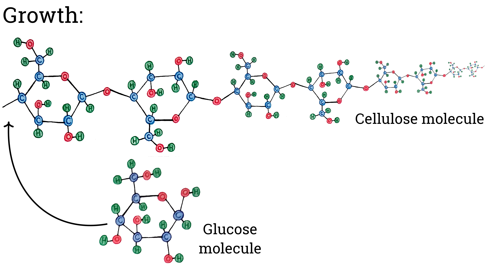We can link this depiction of growth (adding glucose to a long cellulose molecule) back to the discussion of a small sunflower seed growing into a large adult plant (see image below). This sunflower increases in mass (i.e., grows) when some glucose molecules do not go through cellular respiration and instead help build plant tissues like cellulose (although some glucose must also be going through cellular respiration to provide sufficient energy for the growth process).
End of Plant Basics 2, please move on to Experiment 1 using the tabs at the top of the page.
Experiment 1: within-system perspective
There are six questions in this section (1A-F).
Please complete Plant Basics 1 and 2 before beginning this section.
You decide that you want to conduct an experiment with sunflower plants in a sunny greenhouse in order to better understand changes in matter over time.
You measure out 200 grams (g) of dry soil and add it to a small pot. Then, you add 270 g of water to the pot. You place a clear plastic cover over the soil to prevent the water from evaporating (see the figure below).
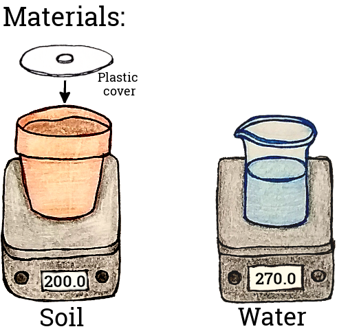Next, you plant a small sunflower in the center of the pot. The sunflower plant initially weighs 0.45 g. However, plants contain a lot of water. So, you estimate that the dry mass of the sunflower, or its mass if it is dried out and all of the water is removed from its body, is 0.05 g. You let the sunflower grow in the pot for 10 days (see the figure below for the experimental set-up).
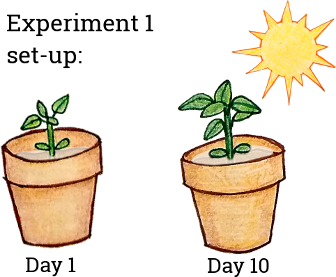After 10 days, you take measurements. You dig up the sunflower plant and weigh it. You also weigh the wet soil. Then, you place the sunflower plant and the soil in an oven until they are completely dry, and weigh both again. Using this method, you have measurements of the wet and dry mass of the sunflower plant and the soil (see the figure below).
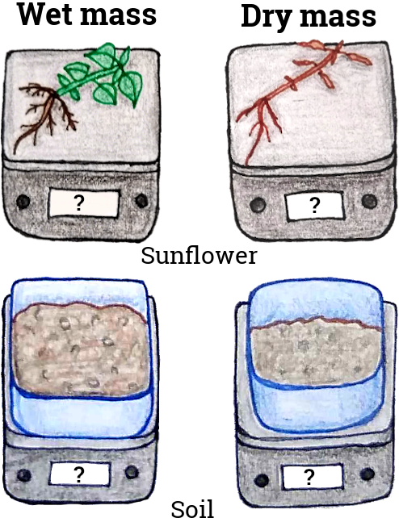-
Answer explanation:
Matter cannot be destroyed, so all of the water molecules still exist somewhere.
Some of the water will remain in the soil.
The sunflower plant will absorb some of the water with its roots. Plants are living organisms that need water for many reasons, including: to stay upright (otherwise they wilt), to keep cool (plants reduce their body temperature by evaporating water), and as an input of photosynthesis. You may want to revisit the Plant Basics 1 tab to review water's role in plants.
So, even though you placed a plastic screen on top of the soil to prevent water from directly evaporating, some of the water will be in the air because of the biological processes carried out by the sunflower.
-
Remember the following:
Dry mass is the mass of the sunflower after all of the water has been evaporated from its body.
Also, the initial dry mass of the sunflower is so small (0.05 g) that it is difficult to see on graph 1B (above and to the right).
Answer explanation:The mass of the sunflower (both wet mass and dry mass) increased from Day 1 to Day 10. In the following two questions, you will be asked why the mass increased.
-
Answer explanation:
Plants absorb water from their roots and they use the water for a number of biological reasons, including staying upright, keeping cool, and as an input of photosynthesis. So, the big increase in mass that you can observe in the blue columns of figure 1B is from the sunflower absorbing water through its roots.
-
Answer explanation:
Plants are completely dried in an oven before dry mass is measured. This means that the increase in dry mass from Day 1 to Day 10 (Figure 1B, red columns) is not because the plant absorbed water (the water does not become a part of the plant's tissues).
However, green plants photosynthesize. During photosynthesis, plants produce food (glucose), which they use in cellular respiration or for growth and maintenance of body structures.
Plants do not eat food in the same way that animals or fungi do (by incorporating large organic molecules into their bodies).
Plants absorb nutrients like nitrogen and phosphorus from the soil. These nutrients are a part of proteins, DNA, and other molecules in the plant. These nutrients will account for a little bit of the mass increase by the plant.
-
Answer explanation:
The mass of the soil will stay almost exactly the same over the 10 day period. It's true that plants need nutrients like nitrogen, potassium, phosphorus, and calcium. However, these nutrients do not make up a large percentage of mass in plants. While the sunflower plant did absorb some of these nutrients, they make up only a very small percentage of its mass.
-
Answer explanation:
Sunlight is energy, not matter. Matter and energy cannot be converted into one another in biological systems.
Plants do not eat food like animals or fungi, and therefore do not take in large organic molecules.
Plants use nutrients in the soil, but these nutrients make up a small percentage of a plant’s mass.
Plants are made up mostly of carbon and oxygen, and they get these atoms from carbon dioxide in the air. During photosynthesis, plants combine carbon dioxide and water to form glucose (and oxygen as a byproduct) in a chemical reaction. The glucose is used by the plant as food, and some of this glucose is used by the plant to add to their body structures.
End of Experiment 1, please move on to Experiment 2 using the tabs at the top of the page.
Experiment 2: whole-system perspective, sealed box
There are five questions in this section (2A-E).
Please complete Plant Basics 1 and 2 and Experiment 1 before beginning this section.
The next day, you try a different experiment. The initial set-up of the experiment is the same as Experiment 1. In the same sunny greenhouse, you measure out 200 g of dry soil in a small pot, and add 270 g of water to the pot. You place a clear plastic cover over the soil to prevent the water from evaporating. Again, you plant a small sunflower in the center of the pot. Its initial mass is the same as the sunflower from Experiment 1 (wet mass = 0.45 g, dry mass = 0.05 g).
However, for Experiment 2, you place the sunflower (in the pot, with soil and water) inside a clear SEALED box. No air can get in or out of this box, but sunlight can get in. You measure the mass of the entire box (containing the sunflower, pot, soil, and water) over time. At the beginning of the experiment, you weigh the box and all of its contents, and it weighs 1,500 g.
Soil is made up of many different things, including small pieces of rocks, minerals, and dead organisms. However, soil also contains living organisms, like fungi and bacteria. The fungi and bacteria that live in soil would complicate our simple plant system, so we will ignore them for this assignment. While natural soil contains a lot of organisms, the basic potting soil that you can buy at a garden store does not contain nearly as many. So, this is a safe enough assumption for our purposes.
-
Answer explanation:
The mass of the box and its contents will not change, even though the plant itself will weigh a little more at the end of Experiment 2.
Gases in the air (inside the sealed box)
Even though the mass of the system as a whole (the box and its contents) doesn't change over time, the mass of the components that make up the system can change. Using a probe that can detect gases in the air, you measure the mass of the gases inside the box before the experiment begins (shown in the figure to the right). The most abundant gas molecules in the air are nitrogen gas (N2), oxygen gas (O2), argon gas (Ar, a single atom molecule), and carbon dioxide (CO2). Notice that there is a lot more oxygen gas in the air than carbon dioxide, though both gases are important in biological systems.
-
Answer explanation:
Plants undergo cellular respiration in all living plant cells in order to carry out metabolic activities.
Cellular respiration occurs in living plants all of the time, during the day or at night. The rate of cellular respiration may increase or decrease depending on sunlight, temperature, or other factors. However, cellular respiration will not completely stop.
When sunlight is available, plants photosynthesizeP and make make glucose. Plants use glucose as a source of matter and energy (i.e., food).
However, matter cannot be destroyed and matter cannot be converted into energy in biological systems.
Plenty of glucose produced during photosynthesis goes towards making plant tissues, and will not be used by the plant for cellular respiration. If a plant is increasing in mass (i.e. growing), it MUST be using some of the glucose for growth (after all, the matter has to come from somewhere).
The rate of cellular respiration relative to photosynthesis will depend on various factors (the age of the plant, the plant species, temperature, precipitation, etc.), but on the whole, plants photosynthesize more than they respire.
End of the activity, all of your responses have been recorded.